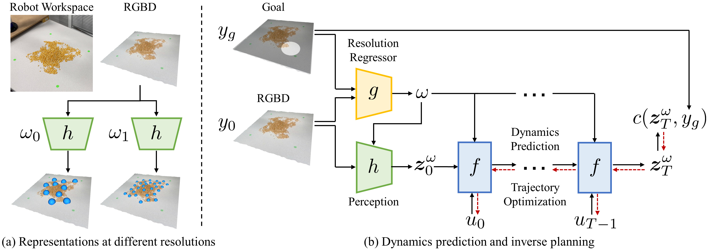

Abstract
Dynamics models learned from visual observations have shown to be effective in various robotic manipulation tasks. One of the key questions for learning such dynamics models is what scene representation to use. Prior works typically assume representation at a fixed dimension or resolution, which may be inefficient for simple tasks and ineffective for more complicated tasks. In this work, we investigate how to learn dynamic and adaptive representations at different levels of abstraction to achieve the optimal trade-off between efficiency and effectiveness. Specifically, we construct dynamic-resolution particle representations of the environment and learn a unified dynamics model using graph neural networks (GNNs) that allows continuous selection of the abstraction level. During test time, the agent can adaptively determine the optimal resolution at each model-predictive control (MPC) step. We evaluate our method in object pile manipulation, a task we commonly encounter in cooking, agriculture, manufacturing, and pharmaceutical applications. Through comprehensive evaluations both in the simulation and the real world, we show that our method achieves significantly better performance than state-of-the-art fixed-resolution baselines at the gathering, sorting, and redistribution of granular object piles made with various instances like coffee beans, almonds, corn, etc.
Overview

Results
Gather |
Redistribute |
Sort |
Disturbance
Gather the object pile into target location
Gather M&Ms into target location
|
Gather object piles with different granularity and shapes into target location
|
Redistribute the object piles into complex target shapes
Redistribute the object pile into Letter G
|
Redistribute the object pile into all letters
|
Redistribute the object pile into Chinese "Hello World"
|
Redistribute the object pile into Japanese "Hello"
|
Sort two object piles to target locations without mixing
Sort coffee beans and candies to target locations without mixing
|
Sort object piles with different granularity and shapes to target locations without mixing
|
Push object piles into target locations under external disturbance
|
Human manipulating object pile
Human pushing the object pile into G-shape
|
Human pushing the object pile into Chinese "Hello World"
|